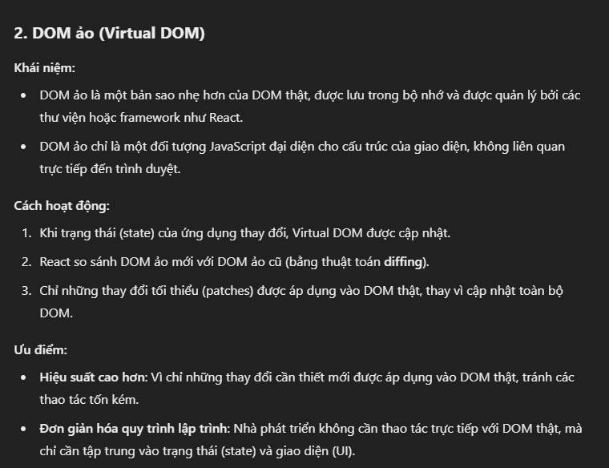
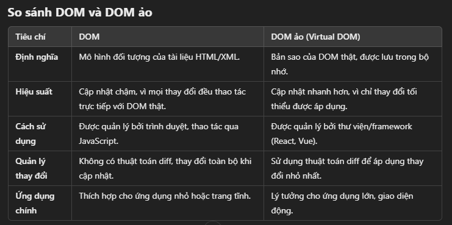
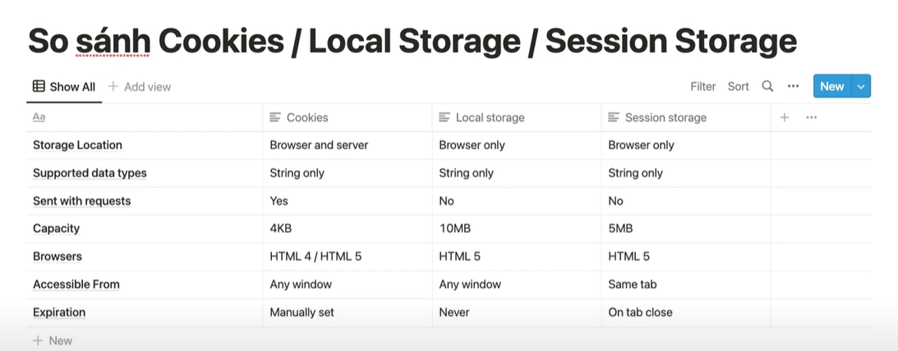
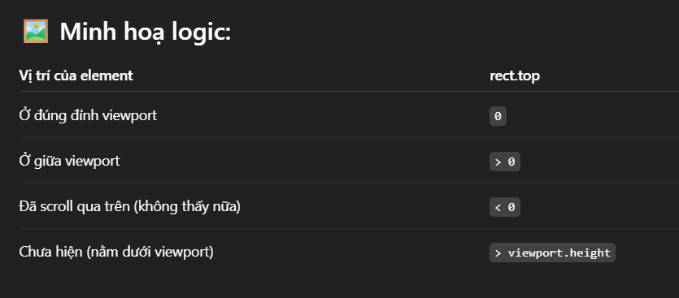
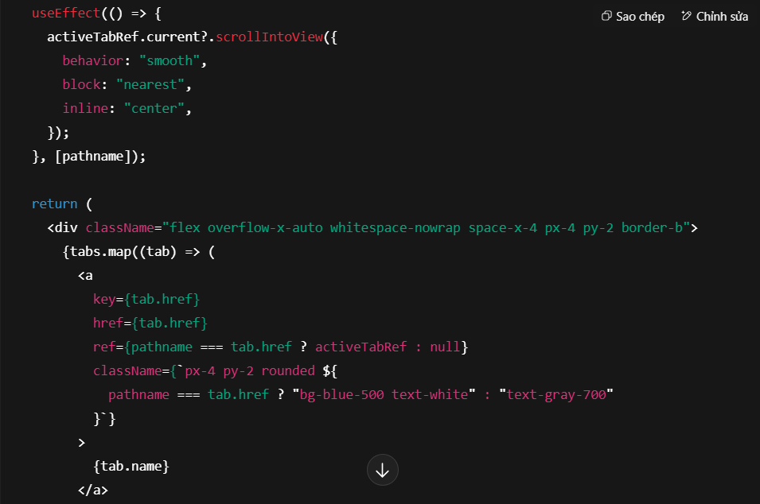

Browser & Web API
DOM và virtual DOM, ba kiểu lưu trữ phía trình duyệt, Blob và FormData, IndexedDB/Dexie, cùng nhóm API đo đạc và cuộn trang.
DOM và Virtual DOM

DOM ảo được đồng bộ với DOM thật thông qua lib React Dom

https://viblo.asia/p/original-dom-vs-shadow-dom-vs-virtual-dom-GrLZDQO3lk0#_bonus-virtual-dom-trong-reactjs-11
DOM API- Là bộ API nằm trong Web API có mặt trên những môi trường hỗ trợ duyệt web - như trên trình duyệt. DOM API cung cấp các đối tượng và phương thức hỗ trợ truy xuất, chỉnh sửa các đối tượng / thành phần trong DOM- DOM API là cầu nối giữa JavaScript và DOM
Cookies - Local Storage - Session Storage

Babel
Babel là một trình biên dịch Javascript mã nguồn mở và miễn phí có chức năng chính dùng để biên dịch ES6 thành phiên bản cũ cho JavaScript có thể chạy trên các môi trường JavaScript cũ hơn
JSX
- Context: ReactDOM.render(react element, document.getElementById(‘root’)) chỉ nhận React Element (ex:React.createElement(‘ul’, …)) chứ ko nhận JSX . Do đó cần babel để biên dịch JSX thành React Element
- Concept: JSX (JavaScript XML) là một cú pháp mở rộng của JavaScript được sử dụng trong React. Nó giúp tạo ra cú pháp giống HTML trong JS để mô tả cấu trúc và giao diện người dùng trong các ứng dụng web.
Blob
là một đối tượng đại diện cho dữ liệu nhị phân (dữ liệu thô) như văn bản, hình ảnh, âm thanh, v.v. Nó thường được dùng trong các thao tác như: Tạo file ảo, Gửi dữ liệu qua mạng (upload), Tạo URL tạm thời để tải về, Xử lý file từ <input type=”file”>
FormData
là một đối tượng dùng để tạo body của request dạng multipart/form-data, thường được dùng để gửi file (ảnh, tài liệu, video...) hoặc dữ liệu có cấu trúc hỗn hợp (text + file) từ client đến server.
IndexedDB
- Là một cơ sở dữ liệu dạng key-value.
- Dữ liệu được lưu trữ theo dạng object và được đánh chỉ mục để truy vấn hiệu quả.
- Hỗ trợ thao tác bất đồng bộ (asynchronous), phù hợp với hoạt động của trình duyệt.
- Có khả năng lưu trữ dữ liệu phức tạp, như: object, array, blob, date, file…
- Dữ liệu không bị mất khi reload hay tắt trình duyệt.
- Cho phép lưu dữ liệu khi không có kết nối internet, vì vậy khi offline vẫn có thể truy cập dữ liệu
- Dung lượng lưu trữ lớn hơn so với
localStorage(hàng chục hoặc hàng trăm MB). - Hỗ trợ index và cursor giúp tìm kiếm hiệu quả.
Dexie.js
- Là một thư viện JavaScript mã nguồn mở được xây dựng để đơn giản hóa việc làm việc với IndexedDB
- Cho phép tạo và truy vấn dữ liệu local trong trình duyệt một cách nhanh chóng, an toàn, và có thể mở rộng.
- Tương thích tốt với các ứng dụng offline-first, Progressive Web App (PWA), hoặc bất kỳ ứng dụng nào cần lưu trữ dữ liệu trên máy người dùng.
popstate
- window.addEventListener('popstate', function (event) { ... }) là một đoạn JavaScript dùng để lắng nghe sự kiện "popstate" – sự kiện xảy ra khi người dùng nhấn nút Back hoặc Forward trên trình duyệt.
- Khi bạn dùng history.pushState() hoặc history.replaceState() để thay đổi URL mà không reload trang, thì khi người dùng nhấn nút Back/Forward, sự kiện "popstate" sẽ được kích hoạt.
getBoundingClientRect
gồm .top , .left , .right, .bottom so với viewport

window.scrollY
khoảng cách từ viewport đến document body , hay là số px mà scroll đã cuộn tính từ đỉnh document body
window.location.hash
// URL hiện tại: https://example.com/page#section2
console.log(window.location.hash); // 👉 "#section2"
innerHight
Giả sử viewport là 900px, thanh cuộn chiếm 16px
window.innerHeight: 900px;
document.documentElement.clientHeight: 884px;
ScrollIntoView
Header có 1 list tabs , ở mode mobile thì list tabs thường hay có scroll ngang , khi ta click 1 tab để navigate sang 1 trang mới , thì header ở trang mới sẽ scroll tới chỗ tab được active, để scroll tới khoảng không gian để thấy tab active thì ta dùng tabActive.scrollIntoView
